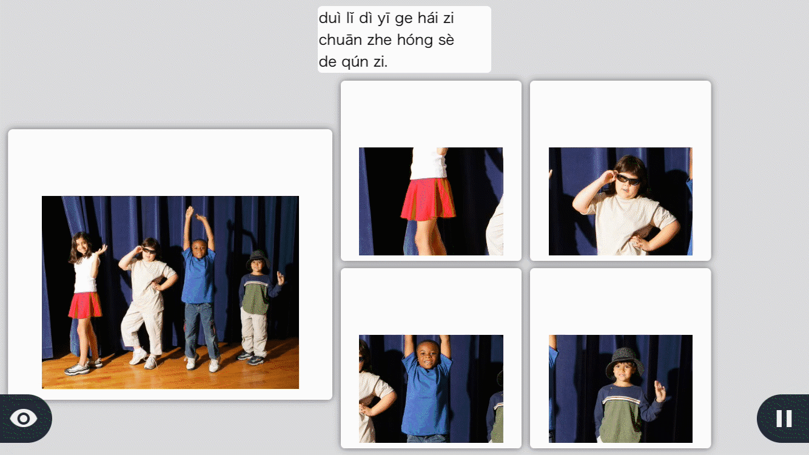

An extension to Rosetta Stone’s subscription app that provides more value to travellers, by extending their language lessons from software to real world practice.
My Role
UX/UI Design, Visual Design, Prototyping, Wireframing
Tools Used
Sketch, Principle, Illustrator, Photoshop, Keynote
Team Members
Anita Chen, Cindy Chien, Christy Liu, Jessica Lieuson, Levona Yim
Business Problem
Rosetta Stone’s overall revenue has been declining over the last few years, particularly in their consumer revenue as people don’t see enough value in subscribing. Revenue in the first quarter 2016 totaled $48.0 million, down 18% from $58.4 million in the year-ago period.
Proposed Solution
Create a new level of digital immersion to provide more value for current subscribers and attract non-subscribers.
Current Rosetta Stone Application
In the current application, the main pain point was that it is locked to the horizontal orientation. It is inconvenient to the users when they are on the go to pull their phone out and needing to rotate it every time.
We decided to design the application so that it can be used both horizontal and/or landscape mode. The experience of the application would not be taken away just because of the orientation. Also, the button size and font size would be the same as well.
Our Intervention
Knowing that for many, the best way to be fully immersed is through travelling to a foreign country, and according to statistics, 53% of those who use a language learning software uses it to communicate better when travelling.
Currently, Rosetta Stone has no focus, development, or support on their mobile app around the travel experience. To add more value to current RS subscribers, we want to bring RS experience to include in-field experiences so that subscribers can really learn the language while immersing themselves in the foreign country. Our solution aims to bring Rosetta Stone closer towards the middle of eLearning and travel where none of their competitors currently exist.
Journey Framework
In order to see how to intervene for our target market, we looked at the journey of our persona who is planning to go on a vacation to foreign country. We considered the touch points and pain points and wanted to intervene between the preparing for the trip, during the trip, and post trip.
We found that there were a lot of pain points surrounding Reinforcement. Rosetta Stone has a lot of lessons that prepare users before their trip. However, it is hard to remember and understand what they have learned unless it is applied in context. Reinforcing the material from the lessons during their trip will help them learn better.

Preparing - When Rosetta Stone subscribers plan on travelling, they can use the Rosetta Stone app for lessons related to travelling that are already offered. The app teaches users languages through lessons of various levels and topics in pronunciation, vocabulary, and grammar. However, some pain points are not knowing how to apply what they’ve learned in context and not knowing enough of the language to prepare them for the trip.
Communicating - While on their trip, some of the pain points are forgetting what they’ve learned and not knowing enough of the language to communicate. It will be important for them to be able to apply what they’ve learned in context but not have to keep bringing out their phone for language help as that will take away from the experience.
Reflecting - The reflecting stage can happen at any time, whether after the trip, or just after a day. Some pain points in the reflecting stage which can include after going out or after the trip is not remembering what they’ve learned, not knowing enough to communicate with friends from the trip, and not knowing which lesson to focus on.
Final Mockups
Core Lesson
In the current Rosetta Stone app, within each unit, there are multiple of lessons ( vocubulary, speaking, pronunciation, grammar, etc). The numbers of core lessons within the units vary. The current Rosetta Stone app combines all the lessons together making it into 1 group where it wraps around.
As the UX designer, I decided it would be the best idea to break the core lessons into different pages. It would be easier for the users to flip back and forth to each lesson instead of scrolling and needing to look at which number they are in. There's also an indicator on the bottom to show the user how many core lessons there are without needing to scroll down just as you would for the current app.
Current App

Redesign
Lessons
We kept with Rosetta Stone's style of teaching since we did not want to change their business model and style of teaching; However, we made a progress indication on the bottom to let the user know how far into the lessons they are in. Also, when the user is having trouble or they want to save the lesson for the future, they tap on the star icon on the top right corner, which will be saved into the Saved Phrases section. Lastly, we noticed that in the original application, there were 2 icons on the side that we confusing in what they meant. The eye icon on the left meant revealing the answers, while the pause button meant the user can pause and exit the program. I decided to suggest to change the icons into words instead to be clearer.
Current App
Redesign
New features added to current app
Custom Lessons - Custom lessons are curated through 10 phrases from the saved phrases lists, targeting what users are having trouble with.
Microphone Headset - We considered using one that already exists, like Pilot, but we realised that users would have to shell out more for these specialised pieces of hardware that may not be to their liking.
Translator - Users can simply tap and hold the record button, speak the phrase or word, and the app will translate it, save it, and speak it back to them.
Saved Phrases - Some pain points in the reflecting stage is not remembering what they’ve learned and not knowing which lesson to focus on. This list is comprised of lessons, phrases, words, and custom translations that the user has bookmarked/saved from their lessons and translations. These can all be organized by having the users create folders and copying the lessons to one or more folders.
Accounts Settings - As users may want to practice another language, they can switch languages easily in the account pop-up card. When they switch, they can see a world map that highlights other areas they can travel to that speak the language.